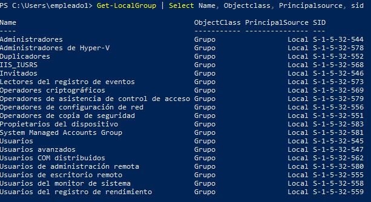
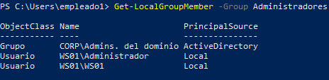

Nos encontramos en la siguiente situación;
Dentro de una organización con un equipo o unas credenciales de un usuario perteneciente al dominio pero sin privilegios y nuestra maquina kali.
Nuestro objetivo es recopilar información.
Para esto vamos a ver unos cuantos comandos y técnicas para recabar información a nivel local.
Para saber el usuario actual y el dominio:
$env:Username // whoami
$env:UserDomain
Nombre de equipo:
$env:ComputerName
Ahora vamos a buscar que grupos locales hay y a que grupos pertenece el usuario.
Yo he encontrado algunos problemas para ejecutar el script pero lo he solucionado ejecutándolo de la siguiente forma:
powershell -ep bypass
Import-Module .\powerview.ps1
Ahora si podemos ejecutar los comando de powerview.
Get-NetLocalGroup
Get-NetGroup -UserName "empleado1" | select name
Get-NetLocalGroupMember -GroupName Administradores | Select-Object MemberName, IsGroup, IsDomain
Esto se puede hacer en parte con comando propios de powershell sin necesidad de powerview
Get-LocalGroup | Select Name, Objectclass, Principalsource, sid

Get-LocalGroupMember -Group Administradores
